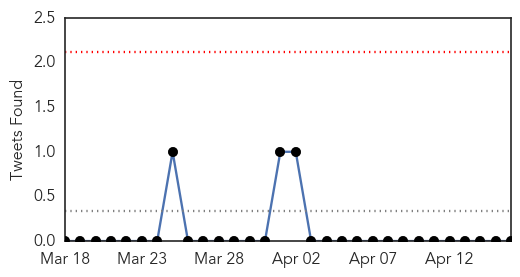
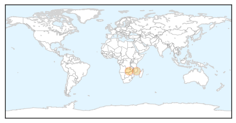

Cholera
30-Day Web Trend
30-Day Twitter Trend
0 alerts, 0 warnings

Article Locations
Article Confidences

Top Articles:
Top Tweets:
-
No tweets found for Apr 16, 2015
Hepatitis
30-Day Web Trend
0 alerts, 0 warnings

30-Day Twitter Trend
0 alerts, 0 warnings

Article Locations


Article Confidences

Top Articles:
- 0.921
- All you need to know about Hepatitis C
- 0.910
- Dozens Get Vaccinated For Hepatitis A In Morrilton
- 0.899
- No link between frozen berries and Hep A
- 0.862
- Fruit not linked to hep A: Patties
- 0.727
- Health Ministry wants penalties for parents who refuse child immunization
- 0.688
- The case for keeping viral hepatitis in the SDGs
- 0.516
- CHP says no hepatitis A link to blueberries
Top Tweets:
-
No tweets found for Apr 16, 2015